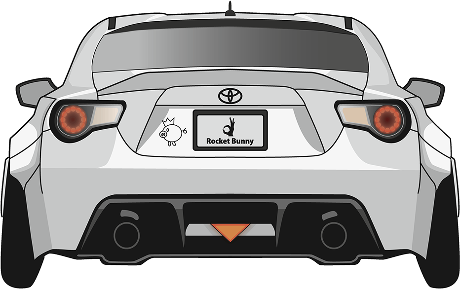

-
December 10, 2025
Toyota 86 Triumphs at National Race
The Toyota 86 has once again proven its dominance in the racing world with a spectacular win at the national race. The car's agility and power were on full display, securing a thrilling victory.
Read more >> -
December 8, 2025
Top Gear Reviews the Toyota 86
In a recent episode, Top Gear put the Toyota 86 to the test, praising its responsive handling and impressive performance. See what the experts have to say about this exceptional vehicle.
Read more >> -
December 10, 2025 
Toyota 86 Enthusiasts Gather for cute Annual Meet
Toyota 86 female owners and fans gathered for the annual meet, showcasing their cars and sharing experiences. The event featured races, car shows, and much more.
Read more >>